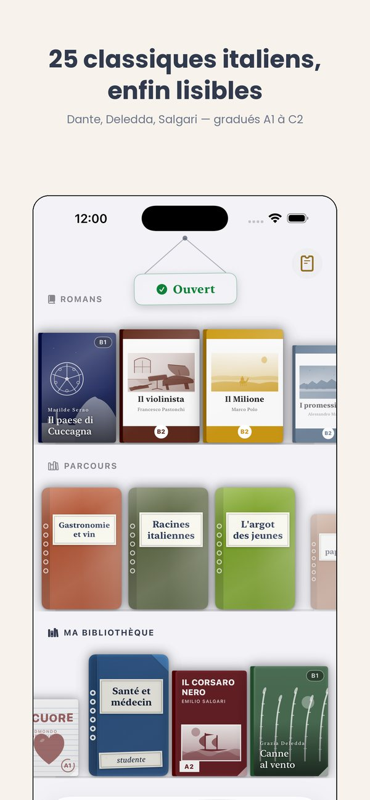
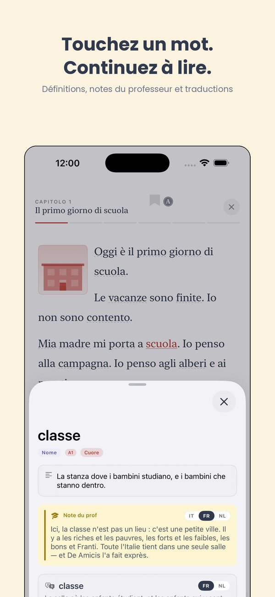
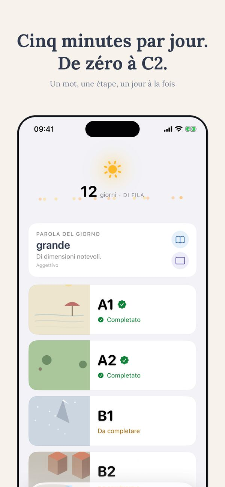
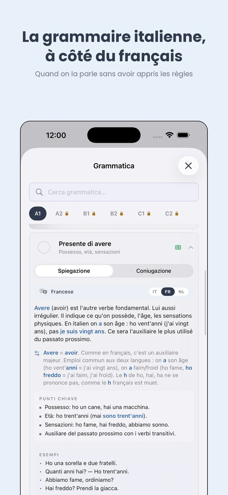
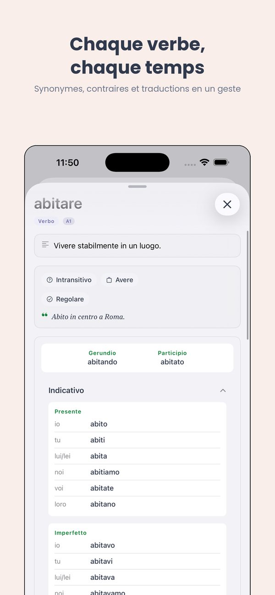
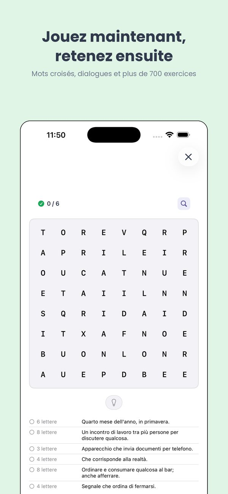

Pour qui vit en Italie
Test d'italien A2 pour le titre de séjour longue durée
Si vous résidez légalement en Italie depuis au moins cinq ans et souhaitez demander le permis UE longue durée, vous devez prouver votre connaissance de l'italien au niveau A2. Voici en quoi consiste exactement le test et comment s'y préparer.
Quand le test est-il exigé ?
Le test est obligatoire uniquement pour obtenir le permis UE pour résidents de longue durée (l'ancienne carta di soggiorno). Il n'est pas demandé pour la délivrance ni pour le renouvellement du titre de séjour ordinaire.
La demande exige aussi : cinq ans de séjour régulier en Italie, des revenus suffisants et un logement adapté.
Comment ça se passe
La demande se fait par voie électronique auprès de la prefettura de votre domicile. Celle-ci vous convoque sous soixante jours en précisant le jour, l'heure et le lieu.
Le test comporte cinq épreuves : deux de compréhension orale, deux de compréhension écrite et une d'interaction écrite. Cent points au total, réussite à partir de quatre-vingts.
Il se déroule dans les CPIA, les centres publics de formation pour adultes, et il est gratuit.
Quand il n'est pas nécessaire
Vous êtes dispensé si vous possédez déjà une certification d'italien reconnue de niveau A2 ou supérieur — CILS, CELI, PLIDA, CERT.IT ou Ce.Co.L — ou un diplôme délivré par un établissement scolaire italien.
Ce que signifie A2 concrètement
Au niveau A2, vous pouvez : vous présenter, parler de votre famille et de votre travail, comprendre une annonce simple ou une lettre courte, remplir un formulaire, prendre rendez-vous, vous débrouiller dans un magasin ou chez le médecin.
On ne vous demande ni discussion abstraite ni maîtrise du subjonctif. On vous demande de fonctionner dans la vie quotidienne.
Un avertissement important
Le niveau A2 attesté par ce test ne vaut que pour le permis longue durée. Il ne sert ni pour le travail ni pour les études.
Pour la nationalité italienne, c'est le niveau B1 qui est requis, et la procédure est différente : le certificat doit être fourni dès le dépôt de la demande.
Comment se préparer
Comptez le temps à partir de la convocation, pas du jour où vous décidez de commencer : il s'écoule en général deux mois entre la demande et l'épreuve.
Commencez par l'écoute — quatre épreuves sur cinq portent sur la compréhension. Lisez de courts textes chaque jour et entraînez-vous à remplir des formulaires.
L'application Ti explique la grammaire et le vocabulaire en français, pas seulement en anglais. Pour qui vit et travaille en Italie, cela supprime toute une étape intermédiaire.
Ti






La moitié du parcours A1 est ouverte, sans inscription
Commencer par l'A1 ↗︎Plus de Thuis Italiaans
Livres gradués par niveau · Cours d'italien en ligne · 700+ exercices gratuits